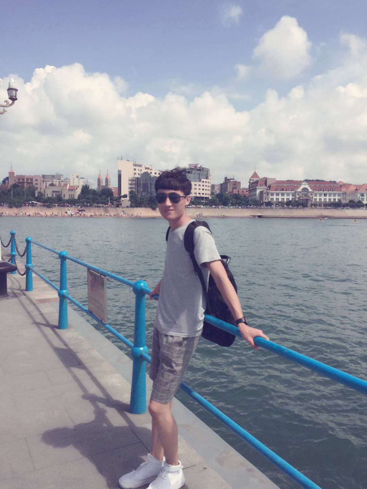

Zhaoyu Hu
Ph.D. Student
Department of Electronic Engineering,
Fudan University,
Yangpu, Shanghai, China.
Email 19210720196@fudan.edu.cn
Curriculum Vitae
Zhaoyu Hu is currently a Ph.D. student from the Department of Electronic Engineering, Fudan University
under the supervision of Prof. Jinhua Yu.
Previously, he got both his B.S. from the College of Computer Science and Electronic Engineering, North University of China
in 2019.
His personal social websites are
Linkedin |
Twitter |
Github.
Zhaoyu Hu is boardly interested in medical image computing, computer vision and machine learning.
Currently, Zhaoyu Hu is working on MR images normalization based on deep learning.
Updates:
- Mar, 2021: One paper is accepted to Frontiers in Oncology.
- Mar, 2021: One paper is accepted to BioMedical Engineering OnLine.
- Mar, 2021: One paper is accepted to IEEE ISBI.
- Jul, 2021: One paper is accepted to Computers in Biology and Medicine.
- Jul, 2021: One paper is accepted to Medical Image Analysis.
Evaluation of lung involvement in COVID-19 pneumonia based on ultrasound images,
Zhaoyu Hu, Zhenhua Liu, Yijie Dong, Jianjian Liu, Bin Huang, Aihua Liu, Jingjing Huang, Xujuan Pu, Xia Shi, Jinhua Yu, Yang Xiao, Hui Zhang, Jianqiao Zhou.
BioMedical Engineering OnLine, 2021.
IF = 3.903
[Paper]
MIL normalization -- prerequisites for accurate MRI radiomics analysis,
Zhaoyu Hu, Qiyuan Zhuang, Yang Xiao, Guoqing Wu, Zhifeng Shi, Liang Chen, Yuanyuan Wang, Jinhua Yu.
Computers in Biology and Medicine, 2021.
IF = 6.698
[Paper]
Automatic Multi-Plaque Tracking and Segmentation in Ultrasonic Videos,
Leyin Li#,
Zhaoyu Hu#, Yunqian Huang, Wenqian Zhu, Yuanyuan Wang, Man Chen, Jinhua Yu.
Medical Image Analysis, 2021.
IF = 13.828
[Paper]
BP-Net: Boundary and perfusion feature guided dual-modality ultrasound video analysis network for fibrous cap integrity assessment,
Leyin Li#,
Zhaoyu Hu#, Yunqian Huang, Wenqian Zhu, Chengqian Zhao, Yuanyuan Wang, Man Chen, Jinhua Yu.
Computerized Medical Imaging and Graphics, 2023.
IF = 7.422
[Paper]
Automatic Detection of Gastric Wall Structure Based on Oral Contrast-enhanced Ultrasound and Its Application on Tumor Screening,
An Sui#,
Zhaoyu Hu#, Xuan Xie, Yinhui Deng, Yuanyuan Wang, Jinhua Yu, Li Shen.
Frontiers in Oncology, 2021.
IF = 5.738
[Paper]
SIAMATSN: REAL-TIME CAROTID PLAQUE TRACKING AND SEGMENTATION OF ULTRASONIC VIDEOS,
Leyin Li#,
Zhaoyu Hu#, Yunqian Huang, Wenqian Zhu, Yuanyuan Wang, Man Chen, Jinhua Yu.
2021 IEEE 18th International Symposium on Biomedical Imaging (ISBI), 2021.
[Paper]
Convolutional neural network with coarse-to-fine resolution fusion and residual learning structures for cross-modality image synthesis,
Guoqing Wu, Xi Chen, Zhifeng Shi, Dachuan Zhang,
Zhaoyu Hu, Ying Mao, Yuanyuan Wang, Jinhua Yu.
Biomedical Signal Processing and Control, 2021.
IF = 5.076
[Paper]
AN EFFICIENT R-TRANSFORMER NETWORK WITH DUAL ENCODERS FOR MEDICAL IMAGE SEGMENTATION,
Zhaoyu Hu, Leyin Li, An Sui, Guoqing Wu, Yuanyuan Wang, Jinhua Yu.
Biomedical Signal Processing and Control, 2022.
IF = 5.076
[Paper]
Deep learning and radiomics based automatic detection of hippocampal sclerosis,
Dachuan Zhang, Yusheng Tong,
Zhaoyu Hu, Guoqing Wu, Juanjuan He, Zhen Fan, Dongyan Wu, Rui Feng, Liqin Lang, Jie Hu, Liang Chen, Jinhua Yu.
The International Journal of Neuroscience, 2021.
IF = 2.59
[Paper]
Ultrasonic carotid plaque video tracking method based on multi-scale siamese network,
Jinhua Yu, Leyin Li,
Zhaoyu Hu, YinHui Deng, Yunqian Huang, Man Chen.
[Patent]
# stands for equality of contribution.